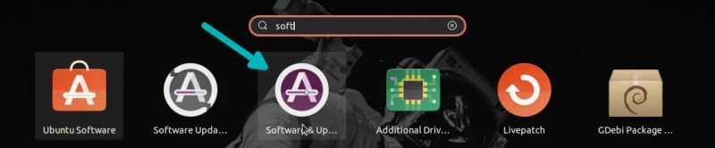
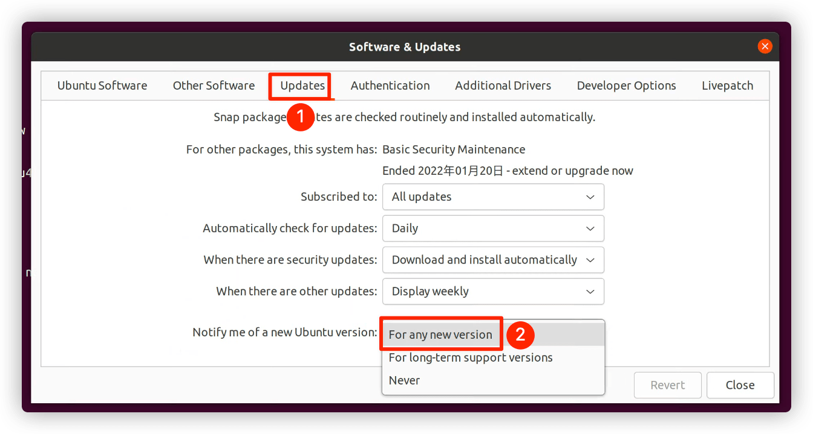
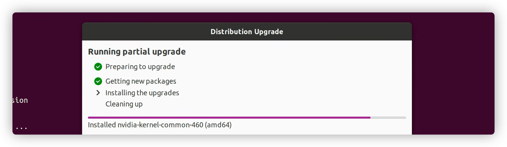
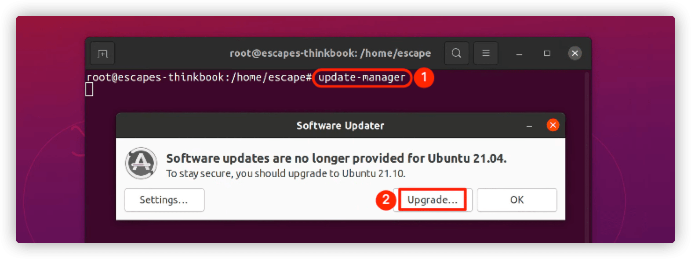
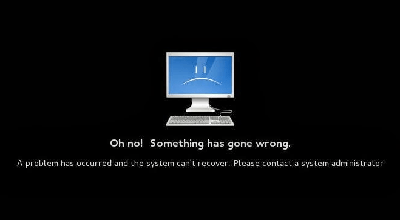
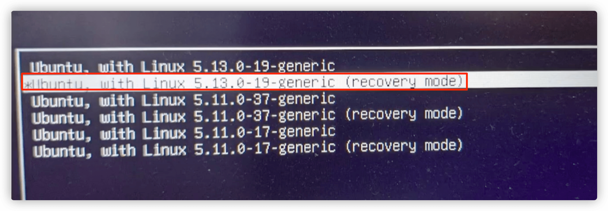
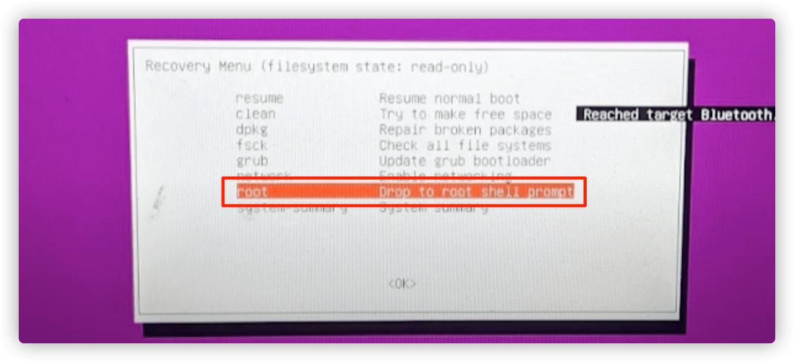
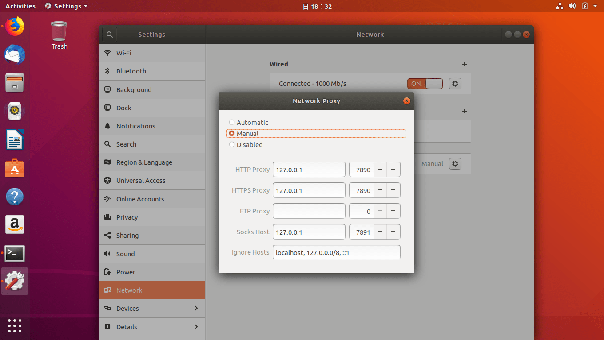

记录 Ubuntu21.04 升级到 Ubuntu22.04 的过程以及相关设置纪要
无论您是想配置一个简单的文件服务器还是构建一个 5 万节点的云，您都可以依靠 Ubuntu Server 版本及其免费的 5 年升级保证。

1. 系统版本升级
将自己新安装的 Ubuntu 系统升级最新版本
| 编号 | 升级命令 | 命令含义解释 |
|---|---|---|
| 1 | apt update |
刷新可安装的软件列表；但是不做任何实际的安装动作 |
| 2 | apt upgrade |
进行安装包的更新；会升级软件版本 |
| 3 | apt dist-upgrade |
进行操作系统版本的升级；会升级操作系统版本 |
| 4 | update-manager |
会打开图形化升级界面进行操作选择升级 |
| 5 | do-release-upgrade |
官方推荐的系统升级方式；参数 -d 表示开发版本 |
| 6 | apt autoclean |
清理旧版本的软件缓存 |
| 7 | apt clean |
清理所有软件缓存 |
| 8 | apt autoremove |
删除系统不再使用的孤立软件 |
1.1 升级方式
可以使用图形化/命令行等多种方式升级系统版本！
- [1] 图形化方式升级
# 更新软件和系统
$ sudo apt update
$ sudo apt upgrade
$ sudo apt dist-upgrade
# 查找分发升级
$ sudo update-manager
# 查找用的新版本(其中-d表示目前系统的开发版本)
$ sudo update-manager -d



- [2] 命令行方式升级
# 安装升级工具
$ sudo apt install update-manager-core
# 更新软件和系统
$ sudo apt update && sudo apt dist-upgrade
# 升级新版本
$ sudo do-release-upgrade
# 查找用的新版本(其中-d表示目前系统的开发版本)
$ sudo do-release-upgrade -d

1.2 清理垃圾
系统升级完成之后，需要对没有的工具或者服务进行清理！
# 清理所有软件缓存
$ sudo apt clean
# 清理旧版本的软件缓存
$ sudo apt autoclean
# 删除系统不再使用的孤立软件
$ sudo apt autoremove
# 删除不用的老版本内核(默认不会删除)
# 在/boot目录下面存放着系统启动的相关文件，包括对应的内核版本文件
# 查看已安装的内核版本
# image: 一般情况下表示旧版本
# deinstall: 代表已经删除的旧版本
# install: 还没有删除的旧版本内核
$ dpkg --get-selections | grep linux
# 查看当前内核版本
$ uname -r
# 删除旧版本内核
$ sudo apt remove linux-image-xxxx
# 手动删除不需要的软件包
$ sudo apt remove --purge '软件包名称'
$ sudo apt autoremove --purge '软件包名称'
# 清理残留数据
$ dpkg -l | grep ^rc | awk '{print $2}' | sudo xargs dpkg -P
# 查询对应自带软件
$ sudo apt list --installed | grep "^gnome-*"
# 删除Gnome桌面版自带的游戏
$ sudo apt remove -y gnome-todo
$ sudo apt remove -y gnome-mines
$ sudo apt remove -y gnome-sudoku
$ sudo apt remove -y gnome-mahjongg
$ sudo apt autoremove -y
1.3 内核升级
通过脚本一键安装内核
我们安装的系统通常会带一个和自身版本匹配的操作系统，比如 ubuntu20.04 的内核版本就是 3.12 的(不同时间下载的镜像包会存在差异)。但是，后续内核版本出新的了，就需要我们自己来升级包(如果系统更新并没有带的话)。
安装内核版本，都是从 内核官网 下载对应 deb 的安装包，然后使用 dpkg 工具进行安装，下面这个脚本其实也是干了同样的时候。不同之处在于，你不用在自己手动下载了，它会根据你传入的参数自行下载和安装。
- [1] 手动安装
- 打开官网地址
- 根据笔记本的型号选择合适包
- 里面的
*_all.deb是必选的 - 然后
generic和lowlatency都是二选一(推荐选generic这个) - 所以最终的包会存在好几个而非是只有一个包(一般情况下是四个)
- 里面的
- 使用安装命令安装即可
接下来是删除未被用到的内核来节约硬盘空间，这一步是可选的，毕竟老内核可以留着备用，万一哪天新内核炸了，切换老内核还有抢救的余地。所以见仁见智，这里只提一下方法。
# 看下一共装了哪些内核
# 重点关心linux-header-*/linux-image-*/linux-modules-*的包
$ sudo dpkg --get-selections | grep linux-*
# 显示deinstall状态
# 属于装过现在已删除，只是一条记录，留着也没事(可删除)
$ sudo dpkg -P linux-modules-xxx-generic
# 显示install状态
# 属于已安装，现在还在硬盘上(可删除)
$ sudo apt remove linux-modules-xxx-generic
$ sudo apt remove --purge linux-modules-xxx-generic
$ sudo apt autoremove
使用自动安装工具，需要注意的是下载可能需要科学上网，下载内核包也需要科学上网，不然非常痛苦，所以还是建议先配置好之后，再来执行该操作吧！
- [2] ubuntu-mainline-kernel - 自动安装
# 下载更新脚本
# https://github.com/pimlie/ubuntu-mainline-kernel.sh
$ wget https://raw.githubusercontent.com/pimlie/ubuntu-mainline-kernel.sh/master/ubuntu-mainline-kernel.sh
# 给其可执行权限
# sudo install ubuntu-mainline-kernel.sh /usr/local/bin
$ chmod a+x ubuntu-mainline-kernel.sh
# 检查最新的可用内核版本
$ ./ubuntu-mainline-kernel.sh -c
# 获取最新内核版本并安装到系统上
$ ./ubuntu-mainline-kernel.sh -i
$ ./ubuntu-mainline-kernel.sh -i v5.17.0
# 卸载系统上最新的内核版本
$ ./ubuntu-mainline-kernel.sh -u
# 查看内核版本
$ uname -rs
1.4 注意事项
介绍系统升级后，遇到服务启动的情况并解决其解决方式！
可能在升级包或执行完整的系统升级后遇到此错误，这可能被称为 Linux 操作系统中的黑屏死机。启动过程结束后，当 Gnome Display Manager 被加载以显示登录屏幕时，将立即引发此异常(由于未打包包的配置错误造成的)。
# 如下所示信息
Oh no! Something has gone wrong. A problem has occurred and the system can’t recover. Please contact a system administrator!

幸运的是，我们找到一种方法来解决这个错误，而不需要经历重新安装的所有麻烦。按照对应步骤执行完成，你熟悉的桌面系统有恢复回来了。重启启动机器之后，选择进入 Linux 的恢复模式，并在恢复模式中开启网络和使用 root 用户进入挽救模式。


# 查看服务日志
$ tail /var/log/dpkg.log
# 配置所有已解包但未配置的包
$ dpkg --configure -a
# 尝试修复具有损坏依赖项的系统
$ apt --fix-broken install
# 尝试执行完整的系统升级
$ sudo apt full-upgrade
# 重启机器
$ systemctl poweroff
2. 必备配置选项
安装并升级完成之后，我们还需要对电脑进行必备的配置
| 安装工具 | 必备操作解释 |
|---|---|
nvidia |
安装英伟达显卡驱动(建议使用最新版本) |
sleep/suspend |
防止系统长时间不使用时机器进入休眠模式 |
systemd/logind.conf |
防止笔记本盒盖之后机器处于休眠模式 |
sources.list |
改善系统更新时的体验(更快/更强) |
2.1 安装驱动版本
主要是为了解决笔记本无法连接外接显示的问题！
- [1] 安装官网最新的驱动版本
# 1.禁用nouveau功能
$ sudo vim /etc/modprobe.d/blacklist.conf
blacklist nouveau
options nouveau modeset=0
# 2.更新系统
$ sudo update-initramfs -u
# 3.重启机器
$ reboot
# 4.重启之后确保已禁用
$ sudo lsmod | grep nouveau
# 5.卸载已经安装的驱动(非必要)
$ sudo apt remove nvidia-*
# 6.进入官网下载对应驱动
# https://www.nvidia.cn
$ sudo chmod a+x NVIDIA-Linux-x86_64-510.12.run
# 7.安装最新版驱动
# 安装过程中可能需要你安装其他工具(gcc/make)
$ sudo ./NVIDIA-Linux-x86_64-510.12.run \
-no-x-check -no-nouveau-check -no-opengl-files
# 8.查看安装是否成功
$ nvidia-smi
- [2] 成功安装后遇到的问题
# 显卡导致屏幕无法调节亮度
# 最好一个路径根据CPU版本不同显示不同
$ ls /sys/class/backlight/amdgpu_bl1
# 可以看到其连接到了Devices设备上(制度)
# 可以卡到最大亮度的数值是255，即我们可以调节的最大亮度
$ cat /sys/class/backlight/amdgpu_bl1/brightness
62
$ cat /sys/class/backlight/amdgpu_bl1/max_brightness
255
# 但是安装好英伟达的显卡驱动之后会发现值变成了100
# 这就是导致屏幕发黑的原因，因为不可设置还没有手动调节
# 使用root用户都无法删除和修改，让你感觉到绝望！！！
$ ls /sys/class/backlight/nvidia_0
2.2 防止系统休眠
这里只是针对于 Linux 系统而言了，Windows 和 MacOS 都有自己的配置！
设置了上面的配置选项之后，并不是就万事大吉了。因为安装的桌面工具(gnome)会导致机器休眠，所以还需要禁用系统休眠才可以。
- [1]
systemctl mask xxx- 会屏蔽对应服务，会建立一个指向
/dev/null的符号链接 - 即使有其他服务要启动被
mask的服务，仍然无法执行成功 - 因为被连接到了
/dev/null上面，所以启动服务时会报错
- 会屏蔽对应服务，会建立一个指向
- [2]
systemctl unmask xxx- 启用时，使用取消屏蔽才可以，即
- [3]
systemctl disable xxx- 只是删除了符号链接
- 启用时，使用
systemctl enable xxx来启动服务
# 并不影响系统远程登录
# 设置后屏幕就不会自动关闭和自动锁屏
Settings -> Privacy -> Screen Lock -> Automatic Screen Lock
-> Lock Screen on Suspend
-> Blank Screen Delay -> Never
# 禁用系统休眠
$ sudo systemctl mask sleep.target
$ sudo systemctl mask suspend.target
$ sudo systemctl mask hibernate.target
$ sudo systemctl mask hybrid-sleep.target
2.3 防止合盖休眠
这里只是针对于 Linux 系统而言了，Windows 和 MacOS 都有自己的配置！
当我们合上了笔记本盖子，却发现它默认会休眠。如果我们是想让它当一台服务器的话，肯定是不允许其休眠(睡觉了我们还怎么使用其服务呢？)，所以这时需要我们配置一下就可以了。
- 因为
systemd处理电源相关的ACPI事件 - 通过
/etc/systemd/logind.conf文件修改相关配置
# 修改配置
$ sudo vim /etc/systemd/logind.conf
HandleLidSwitch=ignore
# 重启服务
$ sudo systemctl restart systemd-logind.service
2.4 替换阿里云源
虽然官方提供了对应国内的地址，但是还是非常慢！
启用国内比较靠谱的镜像站(阿里云、清华源)，可以非常快速获取 Linux系统安装/更新时所需的工具和文件。但是也不是没有问题，时长可以碰到对应镜像站分配的服务器 IP 地址挂了导致无法访问的情况(需要重复执行)。
# 图形界面配置
系统设置 -> 软件和更新 选择下载服务器 -> "mirrors.aliyun.com"
# 手动更改配置
$ sudo cp /etc/apt/sources.list /etc/apt/sources.list.bak
$ sudo sed -i s#cn.archive.ubuntu.com#mirrors.aliyun.com#g \
/etc/apt/sources.list
# 更新服务
$ sudo apt update -y; sudo apt upgrade; sudo apt dist-upgrade
# 备份
$ sudo mv /etc/yum.repos.d/CentOS-Base.repo \
/etc/yum.repos.d/CentOS-Base.repo.backup
# 替换
$ sudo curl -o /etc/yum.repos.d/CentOS-Base.repo https://mirrors.aliyun.com/repo/Centos-vault-8.5.2111.repo
# 更新服务
$ sudo yum update -y; sudo yum upgrade
3. 科学上网配置
随着时间的推移，不会科学上网的人越来越难活下来了！
| 安装工具 | 工具功能解释 |
|---|---|
ClashOnWins |
Clash 订阅工具；墙裂推荐使用 |
ClashOnLinux |
Clash 订阅工具；需要手动配置 |
ShellClash |
Clash 订阅工具；实在有些费劲 |
3.1 ClashOnWins
不推荐服务，只说工具怎么使用和配置！
浦大喜奔 Clash For Windows 这个项目实际上是全平台的，不只支持 Windows 还可以在 Linux 设备上面使用。我们可以使用该工具，来管理自己的 Clash 订阅，从而实现科学上网。
- [1] 工具安装和启动
- 支持本地编辑规则
- 支持查看当前订阅的流量等信息
- 支持自动选择节点，可以根据延迟自动选择，也可以根据规则
# 下载工具
# https://github.com/Fndroid/clash_for_windows_pkg
$ tar -xf Clash.for.Windows-0.19.14-x64-linux.tar.gz
# 启动服务
$ mv Clash.for.Windows-0.19.14-x64-linux clash-for-windows
$ cd clash-for-windows
$ ./cfw
- [2] 相关工具储备知识
- 在默认情况下，
clash会监听三个端口： 7890->http代理端口7891->socks代理端口9090->clash restful配置服务端口
- 在默认情况下，
# 配置文件的路径
~/.config/clash/config.yaml
默认情况下，不会有任何流量进入 Clash。需要我们在操作系统中设置代理之后，就能访问国际互联网了。
- [3] 工具使用教程
- 运行
Clash后，会在本机开启不同的代理服务 - 代理服务器
http://127.0.0.1:7890 - 代理服务器
socks5://127.0.0.1:7891
- 运行
# 设置步骤
Profiles -> Download(订阅地址)
Proxies -> Global/Rule/Direct/Script
General -> AllowLAN -> TUNMode/Mixin
# 浏览器可以通过下面配置
# 终端可以设置如下环境变量
$ export https_proxy=http://127.0.0.1:7890 \
http_proxy=http://127.0.0.1:7890 \
all_proxy=socks5://127.0.0.1:7890

3.2 ClashOnLinux
不推荐服务，只说工具怎么使用和配置！
- [1] 工具安装和启动
这是一个纯命令行的工具，所有参数需要手动指定，配置文件需要事先创建好。下载、解压、执行命令之后，会启动服务。
# 下载最新版本工具
# https://github.com/Dreamacro/clash
$ gunzip clash-linux-amd64-v3-v1.10.0.gz
$ mv clash-linux-amd64-v3-v1.10.0 clash
# 给权限并运行
$ chmod a+x clash
$ ./clash
- [2] 相关工具储备知识
在默认情况下，clash 会监听三个端口：
7890->http代理端口7891->socks代理端口9090->clash restful配置服务端口
# 配置文件的路径
~/.config/clash/config.yaml
- [3] 手动地添加 service 文件
$ sudo vim /usr/lib/systemd/system/clash.service
[Unit]
Description=A rule based proxy in Go for escape.
After=network.target
[Service]
Type=exec
User=escape
Restart=on-abort
ExecStart=/home/escape/proxy/clash
[Install]
WantedBy=multi-user.target
# 开机自启
$ sudo systemctl enable clash.service
# 启动
$ sudo systemctl start clash.service
# 停止
$ sudo systemctl stop clash.service
3.3 ShellClash
通过管理脚本在 Shell 环境下便捷使用 Clash 工具
- [1] ShellClash 功能简介
- 通过管理脚本在
Shell环境下便捷使用Clash - 支持在
Shell环境下管理Clash各种功能 - 支持在线导入
Clash支持的分享、订阅及配置链接 - 支持配置定时任务，支持配置文件定时更新
- 支持在线安装及使用本地网页面板管理内置规则
- 支持路由模式、本机模式等多种模式切换
- 支持在线更新
- 通过管理脚本在
# 运行时的额外依赖
# https://github.com/juewuy/ShellClash
bash/ash 必须 全部缺少时无法安装及运行脚本
curl/wget 必须 全部缺少时无法在线安装及更新并使用节点保存
iptables 重要 缺少时只能使用纯净模式
systemd/rc.common 一般 全部缺少时只能使用保守模式
iptables-mod-nat 一般 缺少时无法使用redir模式，混合模式
ip6tables-mod-nat 较低 缺少时影响redir模式/混合模式对ipv6的支持
crontab 较低 缺少时无法启用定时任务功能
net-tools 极低 缺少时无法正常检测端口占用
ubus/iproute-doc 极低 缺少时无法正常获取本机host地址
- [2] ShellClash 工具安装
# 以普通用户安装需提前创建目录
$ mkdir -pv /home/escape/.local/share
# 一键安装ShellClash工具(国内用户推荐)
$ export url='https://cdn.jsdelivr.net/gh/juewuy/ShellClash@master' && \
sh -c "$(curl -kfsSl $url/install.sh)" && \
source /etc/profile &> /dev/null
# 非root用户安装后请额外执行以下命令以读取环境变量
$ source ~/.bashrc &> /dev/null
- [3] ShellClash 安装日志
***********************************************
** 欢迎使用 **
** ShellClash **
** by Juewuy **
***********************************************
当前用户:escape
请尽量使用root用户（不要直接使用sudo命令！）执行安装!
-----------------------------------------------
仍要安装？可能会产生未知错误！(1/0) > 1
-----------------------------------------------
请选择想要安装的版本：
1 Shellclash正式版
2 Shellclash测试版
-----------------------------------------------
请输入相应数字 > 1
无法切换版本，尝试安装测试版！
最新版本：1.5.6fix
-----------------------------------------------
如遇问题请加TG群反馈： t.me/clashfm
支持各种基于openwrt的路由器设备
支持Debian、Centos等标准Linux系统
-----------------------------------------------
安装ShellClash至少需要预留约1MB的磁盘空间
1 在/etc目录下安装(适合root用户)
2 在/usr/share目录下安装(适合Linux设备)
3 在当前用户目录下安装(适合非root用户)
4 手动设置安装目录
0 退出安装
-----------------------------------------------
请输入相应数字 > 3
目标目录/home/escape/.local/share空间剩余：57G
确认安装？(1/0) > 1
-----------------------------------------------
开始从服务器获取安装文件！
-----------------------------------------------
######################################## 100.0%
-----------------------------------------------
开始解压文件！
clash.service
clash.sh
clashservice
getdate.sh
misnap_init.sh
start.sh
-----------------------------------------------
ShellClash 已经安装成功!
-----------------------------------------------
输入 clash 命令即可管理！！！
-----------------------------------------------
- [4] ShellClash 工具使用
$ clash # 正常模式运行
$ clash -h # 脚本帮助说明
$ clash -u # 执行卸载脚本
$ clash -t # 测试模式运行
# 启动并配置
$ clash
-----------------------------------------------
欢迎使用ShellClash！ 版本：1.5.6fix
Clash服务没有运行（纯净模式），已设置开机启动！
TG群：https://t.me/clashfm
-----------------------------------------------
-----------------------------------------------
欢迎使用ShellClash新手引导！
-----------------------------------------------
请先选择你的使用环境：
(你之后依然可以在设置中更改各种配置)
-----------------------------------------------
1 路由设备配置局域网透明代理
2 Linux设备仅配置本机代理
-----------------------------------------------
请输入对应数字 > 2
-----------------------------------------------
请选择设置本机代理的方式
1 使用环境变量方式配置(不支持部分应用)
2 使用iptables增强模式配置(不支持OpenWrt)
0 稍后设置
请输入对应数字 > 1
-----------------------------------------------
-----------------------------------------------
是否导入配置文件？(这是运行前的最后一步)
你必须拥有一份yaml格式的配置文件才能运行clash服务！
-----------------------------------------------
现在开始导入？(1/0) > 1
-----------------------------------------------
欢迎使用导入配置文件功能！
-----------------------------------------------
1 在线生成Clash配置文件
2 导入Clash配置文件链接
3 还原配置文件
4 更新配置文件
5 设置自动更新
-----------------------------------------------
请输入对应数字 > 2
-----------------------------------------------
此功能可能会导致严重bug，仅限熟练了解clash运行机制的用户使用！！！
如你不熟悉clash机制或者使用此功能出现bug，请使用在线生成配置文件功能！
-----------------------------------------------
是否继续？[1/0] > 1
-----------------------------------------------
仅限导入完整clash配置文件链接！！！
-----------------------------------------------
请输入完整链接 > 需要输入你自己的配置文件地址
-----------------------------------------------
请检查输入的链接是否正确：
https://long-mud-7d56.heroku-cfw.workers.dev/api/v1/client/subscribe?token=63c33725f4a6b499d75d63e7edfe3b1a
确认导入配置文件？原配置文件将被更名为config.yaml.bak![1/0] > 1
-----------------------------------------------
正在连接服务器获取配置文件…………链接地址为：
-----------------------------------------------
-----------------------------------------------
欢迎使用ShellClash！ 版本：1.5.6fix
Clash服务没有运行（纯净模式），已设置开机启动！
TG群：https://t.me/clashfm
-----------------------------------------------
1 启动/重启clash服务
2 clash功能设置
3 停止clash服务
4 禁用clash开机启动
5 设置定时任务
6 导入配置文件
7 clash进阶设置
8 其他工具
9 更新/卸载
-----------------------------------------------
0 退出脚本